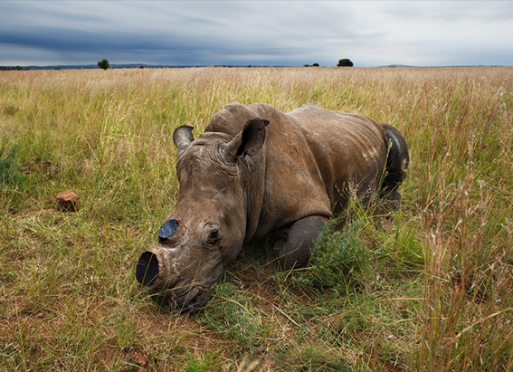
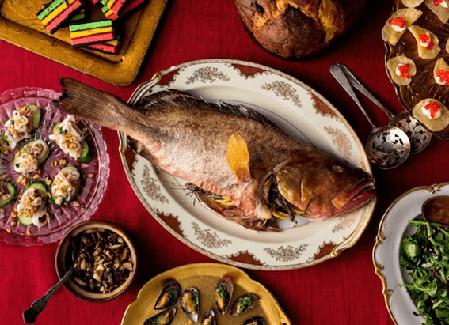
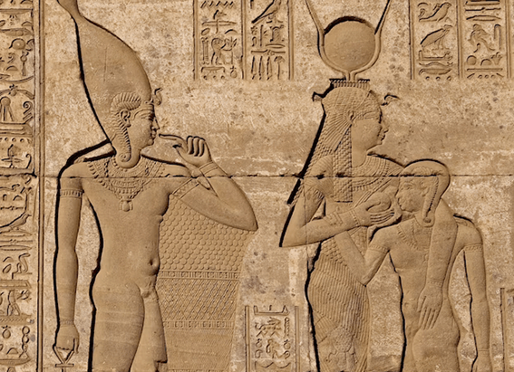

NATIONAL GEOGRAPHIC
Discover China's History Along the Great Wall
TRAVEL
"The Great Wall impresses everyone who sees it for the first time, from children to adults, from the general tourists to scholars,” says Henry Ng, the manager of the World Monuments Fund’s China projects. “The vastness of the structure helps children grasp the great achievements in human history from the Great Wall to the great pyramids and can help inspire them to learn more about human achievements over the millennia.”
Constructed over a period of 2,000 years, the stone sentry actually consists of many great walls, some dating back to the fifth century B.C. The first emperor of China, Qin Shi Huang, ordered these earlier long wall sections linked and extended with watchtowers to protect the new empire from marauding northern tribes. Succeeding emperors and dynasties continued the construction, spreading westward into the Gobi desert to guard the Silk Road. All together, the walls may have stretched more than 30,000 miles.
“Because the walls were defensive structures, you can learn about building and engineering skills throughout ancient China as well as its military history and strategies,” Ng says.
“The wall raised my daughter’s awareness of China’s long history,” says Beijing resident Pan Ningxin, who took her daughter Mengmeng, eight, to the wall at Badaling. “We talked about the function of the Great Wall when it was built, so she got some idea of the wars between nations and how dynasties change.”
Early sections of the wall were built from layers of rammed earth and local materials red palm fronds in the Gobi desert, wild poplar trunks in the Tarim Basin, reeds in Gansu. Many of these sections have eroded over the centuries; the Great Legacy of an Ancient Time Wall as we know it largely dates from the Ming dynasty from the 14th to the 17th centuries. The Ming wall stretches nearly 4,500 miles from Shanhaiguan Pass on the Bohai Sea to Jiayuguan Pass in the Gobi.
People of the Ming dynasty layered stone and brick over packed earth, building walls 20 feet wide at the base and nearly 30 feet high that twist along the steep mountain ridges north of Beijing. Surrounded by misty green hills with watchtowers that disappear into low-hanging clouds, the wall is a place for reflection the sense of history and the craftsmanship required to build it permeate the ancient stones.
“We wonder about the builders, the soldiers who were stationed at some of these lonely outposts, the nearby villagers who may or may not have appreciated the garrisons near them,” says Jennifer Ambrose, who lives with her family north of Beijing and visits the Great Wall several times a month. “We explore around the wall, surprised to find remains of older walls that predate the Ming by centuries.”
Forced laborers used pulleys to haul stone slabs nearly seven feet long and weighing a ton up the steep mountainsides. Some 10,000 watchtowers and beacon towers are located every 200 to 300 yards for quick communication. While drums were the main form of communication before 200 b.c., soldiers later used fire and smoke signals to broadcast the size of an enemy force. Each tower along the wall had a ready supply of burnable materials should the need arise. During the Ming dynasty the sounds of cannon warned of approaching danger.
Children will delight in wandering the ramparts, lined with battlements and parapets and wide enough for five horses to ride abreast. “We encourage our seven year old son, Myles, to explore the construction as much as he can,” Ambrose says.
“To look for signs of pieces that are missing, like bars on the windows, or to try to figure out from which direction invaders were expected to come based on the slots through which archers shot. Often a visit will leave us with more questions that we try to research afterward, like, Why was the Ming wall built in this direction when an earlier wall, still visible, was built so many meters in another direction?”
Comments :
- john Very good
- john Very good
Leave a Reply
Your email address will not be published. Required fields are marked*
Related posts:
-
No one wanted to buy 2,000 rhinos up for auction. What happened next is good news.
About 2,000 white rhinos living on the world’s largest rhino farm will be released into the wild as part of a new deal struck between farm owner John Hume and the conservation nonprofit African Parks.
View article -
What is the Feast of the Seven Fishes
Christmastime can be a symphony of sensory delight: the sweetness of a candy cane, the smell of pine, the chime of bells, the glow of string lights and for some, the sizzle of fish in the kitchen.
View article -
Egyptians used papyrus and other ways of handling periods through the years
In ancient Egypt, people used softened papyrus, a grass-like plant, to absorb their menstrual blood sort of like an early tampon. The oldest historical record of period management, it’s also one of the few known
View article